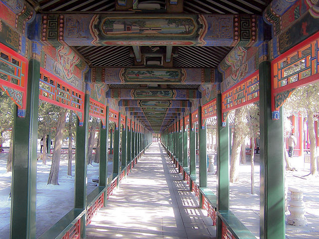

| Country Visited | What I Enjoyed Most | Would I Go Back | Would I Recommend You Go |
|---|---|---|---|
| China | Experiencing Tiananmen Square; Pre-McDonalds | Absolutely | Definitely if you have an adventureous spirit |
| Venice | No cars & lots of bridges; Walk or ride water taxis | In a heartbeat | No question it is a must for any world traveler (WT) or WT Wannabe |
| Tuscany | Cycling the country sides and enjoying time in the small towns | Yes, on another bike tour | Yes as it has charm for both city dwellers (Firenze) as well as Old Walled Cities (Siena) |
Although I don't have any of my actual photos to share, I found several images that brought back wonderful memories. Of all the places I've traveled, I consider China to be my most exotic destination to date.
This is a photo of the Summer Palace and some of the ornately decorated pillars as you walk down the long corridor that goes to the lake on the Palace grounds.
 Photo By: Derzsi Elekes Andor Derzsi Elekes Andor - Own work, CC BY-SA 3.0, https://commons.wikimedia.org/w/index.php?curid=18095481